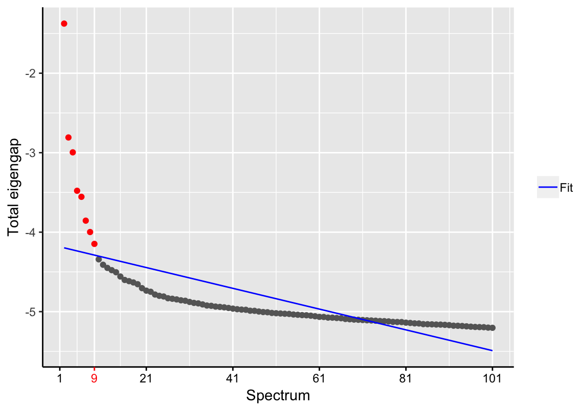
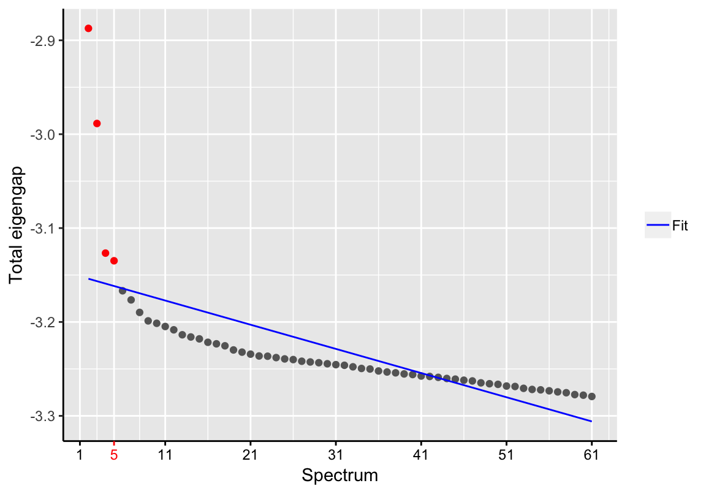
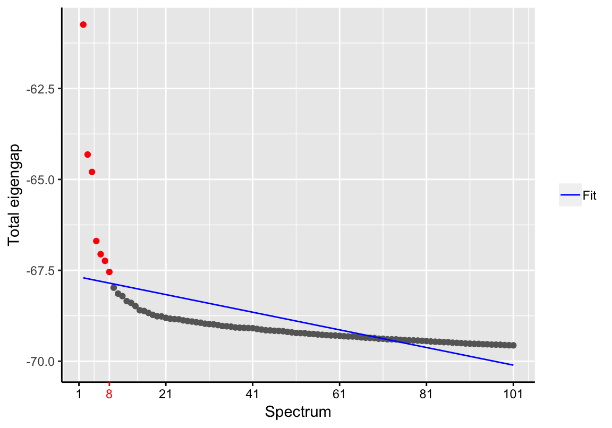
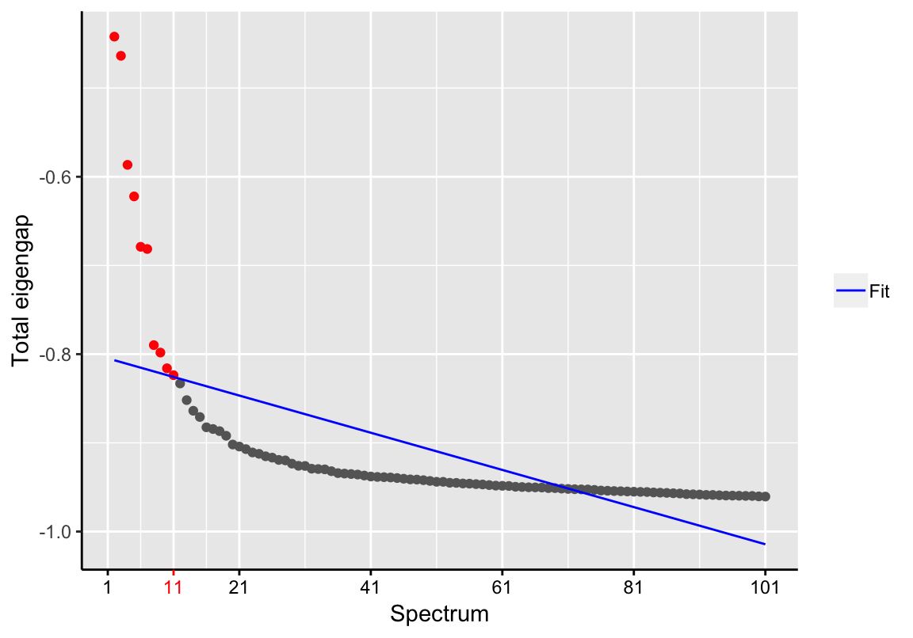
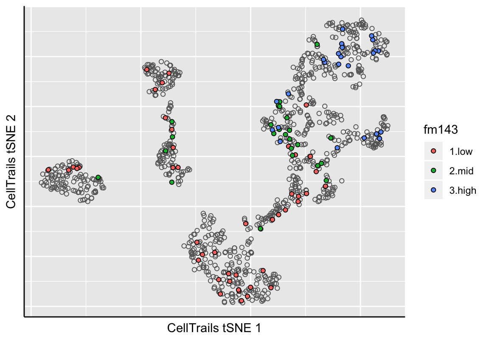
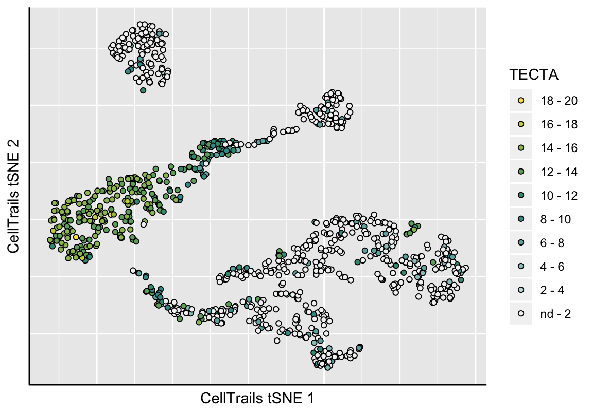
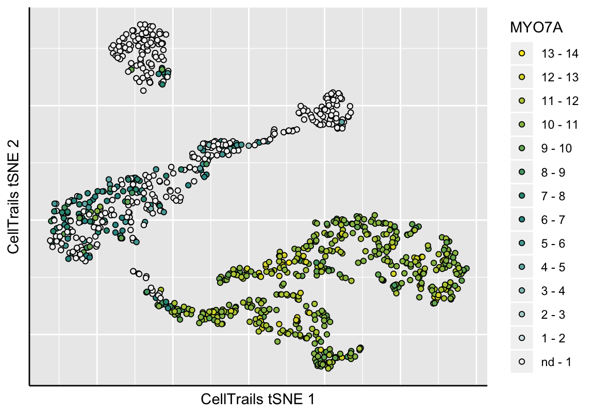

Chapter 4 Manifold Learning
The samples’ expression profiles are shaped by many factors, such as developmental age, tissue region of origin, cell cycle stage, as well as extrinsic sources such as status of signaling receptors, and environmental stressors, but also technical noise. In other words, a single dimension, despite just containing feature expression information, represents an underlying combination of multiple dependent and independent, relevant and non-relevant factors, whereat each factor’s individual contribution is non-uniform. To obtain a better resolution and to extract underlying information, CellTrails aims to find a meaningful low-dimensional structure - a manifold - that represents samples mainly by their latent temporal relation.
4.1 Spectral Embedding
CellTrails aims to decipher the temporal relation between samples by computing a novel data representation which amplifies trajectory information in its first n dimensions. For this purpose, CellTrails employs spectral graph theory. Due to their locality-preserving character, spectral embedding techniques are advantageous because these consider the data’s manifold structure, are insensitive to outliers and noise, are not susceptible to short-circuiting, and emphasize naturally occurring clusters in the data (Belkin and Niyogi 2003; Sussman et al. 2012). In a nutshell, CellTrails assumes that two samples that have a high statistical dependency are represented in close proximity along a trajectory. CellTrails captures the intrinsic data geometry as a weighted graph (nodes = samples, edges = statistical dependencies between pairs of samples) by means of fuzzy mutual information and uses spectral graph decomposition to unfold the manifold revealing the hidden trajectory information.
The spectral embedding is performed using the function embedSamples and results in a list with the eigenspace representation of the original expression data.
# Spectral Embedding
se <- embedSamples(exBundle)## Computing adjacency matrix ...## Computing spectral embedding ...names(se)## [1] "components" "eigenvalues"Please note that this function can also be applied to any numerical matrix of interest.
4.2 Dimensionality Reduction
CellTrails assumes that the expression vectors are lying on or near a manifold with a low dimensionality that is embedded in the higher-dimensional space. The number of dimensions can be reduced, which lowers noise (i.e., truncates non-relevant dimensions), while the geometry of the trajectory is emphasized.
The function findSpectrum helps to identify the intrisic dimensionality of the data. It determines the most informative dimensions based on the eigenvalues (spectrum) of the eigenspace. Components of the latent space are ranked by their information content. In the following example, CellTrails identifies relevant components by using a linear fit on the eigengaps of the first 100 eigenvalues.
# Identify relevant components
d <- findSpectrum(se$eigenvalues, frac=100)
d## [1] 1 2 3 4 5 6 7 8 9We suggest to assess the resulting Scree plot (eigengaps versus spectrum size) for whether the estimation of the unknown intrinsic dimensionality was reasonable. Otherwise, we recommend to adjust the parameter frac accordingly.
Please note that considering too few components of the latent space may result in loss of information, while selecting lower ranked components could increase noise.
Next, we set the identified latent space to our SingleCellExperiment object:
latentSpace(exBundle) <- se$components[, d]## Calculating approximation of CellTrails manifold for 2D visualization...## Used tSNE perplexity: 304.3 Blocking Uninformative Substructures
Single-cell measurements are susceptible to the influence of confounders, such as batch, gender or cell cycle effects. Blocking these nuisance factors during manifold learning may be necessary to significantly improve the result of downstream data analyses, such as reconstruction of the temporal trajectory. Therefore, the function embedSamples can account for confounding effects via the parameter design, as will be demonstrated on the example of single-cell RNA-Seq data of murine T helper 2 cell (Th2) differentiation (Mahata et al. 2014). In a nutshell, Buettner et al. (F. Buettner et al. 2015) identified cell cycle effects as major confounder in this dataset and applied a single-cell latent variable model (scLVM) approach to account for this factor. They unbiasedly identified then two cell populations, namely a group of partially and a group of fully differentiated cells. The normalized, log transformed and filtered scRNA-Seq data can be obtained from the supplementary materials of their article (Table S5 and S7); further, a curated list of Th2 marker genes, the scLVM-corrected expression matrix, and a binary cluster assignment for each cell can be downloaded.
For your convenience, the numeric expression matrix (here called th2) and the list of marker genes were already organized in a SingleCellExperiment container. Here, the expression matrix consists of 7,063 selected genes (116 of which are marker genes) which have been detected in more than 3 of all 81 cells.
th2 <- readRDS(system.file("exdata", "th2.rds", package="CellTrails"))
th2## class: SingleCellExperiment
## dim: 7063 81
## metadata(0):
## assays(1): logcounts
## rownames(7063): Gnai3 Cdc45 ... ENSMUSG00000097906 X4933404O12Rik
## rowData names(2): isMarker ENSEMBL
## colnames(81): Cell 1 Cell 2 ... Cell 80 Cell 81
## colData names(0):
## reducedDimNames(0):
## spikeNames(0):# Number of markers
nMarkers <- sum(rowData(th2)$isMarker)
nMarkers## [1] 116# Number of total genes
nGenes <- nrow(th2)
nGenes## [1] 7063First, we have a quick look into the unprocessed dataset. If the latent temporal factor is a major source of variance, two clusters, which separate fully from partially differentiated cells, should be detectable; if those clusters are not identifiable, the data is affected by uniformative substructures. We assume that Th2 marker genes should be enriched in the group of genes differentially expressed between clusters, i.e. the enrichment odds ratio should be > 1 and the enrichment P-value should be significant if cells were clustered by maturity.
# Clustering in the original space
D <- dist(t(logcounts(th2)))
dendro <- hclust(D, method="ward.D2")
cluster <- cutree(dendro, k=2)
# Differential expression
pvals <- apply(logcounts(th2), 1, function(x) {
wilcox.test(x[cluster == 1],
x[cluster == 2],
exact=FALSE)$p.value})
fdr <- p.adjust(pvals, method="fdr")
# Number of differentially expressed markers for FDR < 0.05
de <- names(fdr[fdr < 0.05]) #differentially expressed genes
deGenes <- length(de) #number of genes
deMarkers <- sum(rowData(th2[de, ])$isMarker) #number of markers
# Enrichment statistic
enrichment.test(deMarkers, nMarkers, deGenes, nGenes)## $p.value
## [1] 0.989218
##
## $odds.ratio
## odds ratio
## 0.6526187
##
## $conf.int
## [1] 0.4687965 Inf
## attr(,"conf.level")
## [1] 0.95
##
## $method
## [1] "Fisher's exact test for enrichment"Since the enrichment is not significant (with an odds ratio < 1), we argue that cells were not properly separated by maturity in the original space.
To block the cell cycle effects, CellTrails expects a design matrix modeling the cell cycle stage as the explanatory factor for each cell. As the cell-cycle stage of each cell is not known in this data set, we need to predict cell cycle phases. In this example, we use the classifier cyclon from the scran package (Lun, McCarthy, and Marioni 2016). To be able to run the algrithm properly, gene symbols were translated to Ensembl identifiers using Bioconductors’ annotation database interface package AnnotationDbi (Pagès et al. 2017) and the mouse annotation data package org.Mm.eg.db (Carlson 2017).
Please note that these packages are not part of CellTrails and may be needed to be installed first.
## Not run:
##library(scran)
## End(Not run)
# Run cyclone
mcm <- readRDS(system.file("exdata", "mouse_cycle_markers.rds",
package="scran"))
set.seed(1101)
cellCycle <- scran::cyclone(x=logcounts(th2),
pairs=mcm,
gene.names=rowData(th2)$ENSEMBL)
# Number of predicted phases
table(cellCycle$phases)##
## G1 G2M S
## 59 14 8Let’s create the respective design matrix using the cyclon classification scores.
# Design matrix
cc_design <- model.matrix(~ cellCycle$scores$G1 + cellCycle$scores$G2M)
head(cc_design)## (Intercept) cellCycle$scores$G1 cellCycle$scores$G2M
## 1 1 0.108 0.701
## 2 1 1.000 0.002
## 3 1 0.971 0.009
## 4 1 1.000 0.000
## 5 1 1.000 0.000
## 6 1 0.671 0.338Next, we reduce the dimensionality using CellTrails. Passing the design matrix to embedSamples ensures that CellTrails properly regresses out the effects of the explanatory variables before learning the manifold. Then, we cluster the cells in the derived lower-dimensional space.
# Perform Dimensionality Reduction with Design Matrix
se <- embedSamples(th2, design=cc_design)## Warning in .embedSamples_def(x = M, design = design): Please note that
## trajectory features weren't selected. Thus, spectral embedding will be
## performed on all features, which may result in lower accuracy and longer
## computation time.## Blocking nuisance factors ...## Computing adjacency matrix ...## Computing spectral embedding ...d <- findSpectrum(se$eigenvalues, frac=60)
latentSpace(th2) <- se$components[, d]## Calculating approximation of CellTrails manifold for 2D visualization...## Used tSNE perplexity: 16# Clustering in Latent Space
D <- dist(latentSpace(th2))
dendro <- hclust(D, method="ward.D2")
cluster <- cutree(dendro, k=2)We test the quality of clustering by quantifying the enrichment of marker genes in the set of differentially expressed genes.
# Differential expression
pvals <- apply(logcounts(th2), 1, function(x) {
wilcox.test(x[cluster == 1],
x[cluster == 2],
exact=FALSE)$p.value})
fdr <- p.adjust(pvals, method="fdr")
# Number of differentially expressed markers for FDR < 0.05
de <- names(fdr[fdr < 0.05]) #differentially expressed genes
deGenes <- length(de) #number of genes
deMarkers <- sum(rowData(th2[de, ])$isMarker) #number of markers
# Enrichment statistic
enrichment.test(deMarkers, nMarkers, deGenes, nGenes)## $p.value
## [1] 6.144029e-07
##
## $odds.ratio
## odds ratio
## 5.971408
##
## $conf.int
## [1] 3.431202 Inf
## attr(,"conf.level")
## [1] 0.95
##
## $method
## [1] "Fisher's exact test for enrichment"The marker gene enrichment is significant (P-value < 10-6) and the odds ratio is remarkably increased to ~6, indicating that the cells are now properly separated by maturity. In comparison, an enrichment odds ratio of 2.4 was achieved using the cell-cycle ‘corrected’ data and the clustering provided in the original scLVM study (F. Buettner et al. 2015).
Please note that the differential gene expression analysis using the CellTrails derived clusters was performed on the actual expression matrix and not the cell-cycle ‘corrected’ expression values. In contrast to scLVM, CellTrails blocks the nuisance variables for manifold learning only and keeps the original expression values for downstream analysis. This is due to the fact that the manipulated expression matrix does not represent the actual transcript levels measured in each cell, nor does it account for the uncertainty of estimation of the blocking factor terms. By this means, CellTrails protects against confounding effects without discarding information.
Besides cell cycle, technical confounders may also be relevant to be accounted for. Those can occur, for example, if samples were processed on different plates or if samples were pooled from multiple sequencing runs. In this case, a design matrix with the respective explanatory variables can be constructed and passed to embedSamples.
4.4 Using Alternative Methods
If the user prefers to use an alternative approach for dimensionality reduction, any latent space can be set to a SingleCellExperiment object. The latent space has to be a numerical matrix; rows represent samples and columns the components of the latent space. CellTrails uses by default spectral embedding, but the framework also operates well with any other spectral dimensionality reduction method, such as PCA (e.g., available in CellTrails via function pca) and diffusion maps (e.g., available via the destiny package (Angerer et al. 2015); please note this package is not part of CellTrails and may be needed to be installed first):
# Make copy of example data
exAlt <- exBundle
# PCA
pca_result <- pca(exAlt)## Warning in .pca_def(M = M, do_scaling = do_scaling, design = design): 1
## feature(s) do(es) not encode valuable information (i.e., has/have constant
## expression over all samples) and was/were therefore neglected.## Performing PCA ...d <- findSpectrum(pca_result$eigenvalues, frac=100)
latentSpace(exAlt) <- pca_result$components[, d]## Calculating approximation of CellTrails manifold for 2D visualization...## Used tSNE perplexity: 30# Diffusion maps
## Not run:
##library(destiny)
## End(Not run)
lcounts <- t(logcounts(exAlt))
dmaps_result <- destiny::DiffusionMap(lcounts, n_eigs = 101)
d <- findSpectrum(destiny:::eigenvalues(dmaps_result), frac=100)
latentSpace(exAlt) <- destiny:::eigenvectors(dmaps_result)[, d]## Calculating approximation of CellTrails manifold for 2D visualization...
## Used tSNE perplexity: 30Please note that the function latentSpace<- accepts any numerical matrix. Therefore, any latent space with an already reduced number of dimensions can be assigned to a CellTrailsSet object with this function; eigenvalues are only used to determine the intrinsic dimensionality of the data set.
4.5 Visualization
CellTrails allows us to visualize an approximation of the learned lower-dimensional manifold in two dimensions. CellTrails’ plot function plotManifold uses t-distributed stochastic neighbor embedding (tSNE) (Maaten and Hinton 2008) to illustrate the arrangement of the samples in the latent space in a two-dimensional plot. Points denote individual samples, the colorization indicates either a metadata label or expression of a single feature. Empty points denote a missing label or missing expression value (non-detects). Available phenotype lables can be listed with the function phenoNames, available features with featureNames, respectively.
# Show available phenotype labels
phenoNames(exBundle)## [1] "fm143" "origin"# Show sample metainformation 'fm143 dye uptake'
plotManifold(exBundle, color_by="phenoName", name="fm143")
The function plotManifold returns a ggplot object (Wickham 2009) from the ggplot2 package, which can be adapted by the user’s needs and preferences (for details, please refer to the ggplot2 manual; to save the plot see function ggsave). The 2D representation of the latent manifold is by default already stored the the SingleCellExperiment object (also accessible via reducedDims). However, the plotManifold function provides the parameter recalculate. For example, if we want to change the perplexity parameter of the tSNE calculation, then we set recalculate=TRUE. The new tSNE result needs to be set to the SingleCellExperiment object using the manifold2D function, respectively.
# Show feature expression (e.g., gene TECTA)
gp <- plotManifold(exBundle, color_by="featureName", name="TECTA", recalculate=TRUE)## Calculating 2D approximation of CellTrails manifold...gp
# Store tSNE result
manifold2D(exBundle) <- gp
# Show feature expression (e.g., genes MYO7A)
plotManifold(exBundle, color_by="featureName", name="MYO7A")
References
Belkin, M, and P Niyogi. 2003. “Laplacian Eigenmaps for Dimensionality Reduction and Data Representation.” Neural Computation 15: 1373–96.
Sussman, DL, M Tang, DE Fishkind, and CE Priebe. 2012. “A Consistent Adjacency Spectral Embedding for Stochastic Blockmodel Graphs.” J Am Stat Assoc 107: 1119–28.
Mahata, B, X Zhang, AA Kolodziejczyk, V Proserpio, L Haim-Vilmovsky, AE Taylor, D Hebenstreit, et al. 2014. “Single-Cell Rna Sequencing Reveals T Helper Cells Synthesizing Steroids de Novo to Contribute to Immune Homeostasis.” Cell Reports 7 (4): 1130–42.
Buettner, F, KN Natarajan, FP Casale, V Proserpio, A Scialdone, FJ Theis, SA Teichmann, JC Marioni, and O Stegle. 2015. “Computational Analysis of Cell-to-Cell Heterogeneity in Single-Cell Rna-Sequencing Data Reveals Hidden Subpopulations of Cells.” Nature Biotechnology 33 (2): 155–60.
Lun, ATL, DJ McCarthy, and JC Marioni. 2016. “A Step-by-Step Workflow for Low-Level Analysis of Single-Cell Rna-Seq Data with Bioconductor.” F1000Res. 5: 2122.
Pagès, H, M Carlson, S Falcon, and N Li. 2017. AnnotationDbi: Annotation Database Interface.
Carlson, M. 2017. Org.Mm.eg.db: Genome Wide Annotation for Mouse.
Angerer, P, L Haghverdi, M Buettner, FJ Theis, C Marr, and F Buettner. 2015. “Destiny: Diffusion Maps for Large-Scale Single-Cell Data in R.” Bioinformatics 32: 1241–3.
Maaten, LJP van der, and GE Hinton. 2008. “Visualizing High-Dimensional Data Using T-Sne.” Journal of Machine Learning Research 9: 2579–2605.
Wickham, H. 2009. Ggplot2: Elegant Graphics for Data Analysis. Springer-Verlag New York. http://ggplot2.org.